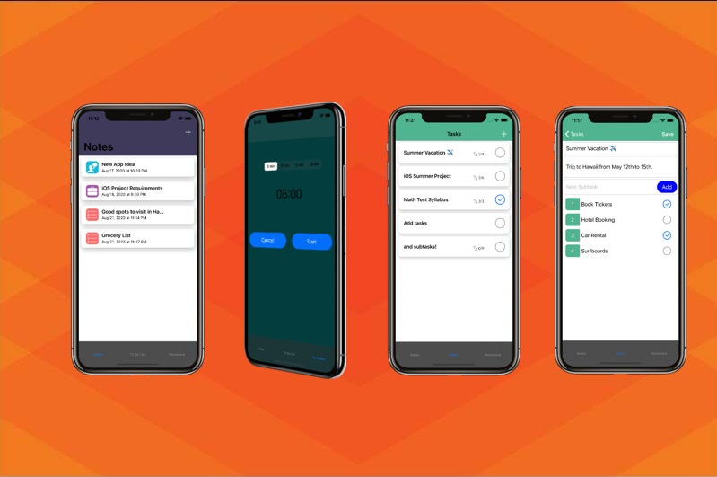

BillLit
React, PWA, Supabase Real-Time Updates, OCR
A real-time bill splitting app that helps you itemize large meals with just an image and get paid back using Venmo Deeplinks. Intuitive UI that updates in real time and allows for sharing receipts via unique links and QR codes.
Over 200 receipts processed and counting!

Helix
React Native, Expo, ShareTribe, Typescript
A full stack application that uses ChatGPT to summarize and save news articles from sources you trust. I developed a FastAPI endpoint that takes in your favorite news article URL, scrapes it for text and images and uses ChatGPT to summarize it in 100 words while keeping key details. Built using React, FastAPI, Firebase and OpenAI.

AI News Condenser
React, FastAPI, Firebase, OpenAI
A React application that scrapes news articles from trusted sources, removes bias and summarizes news in under 100 words.

Survey Tool
Next.js, Magic Links, Admin & User Dashboard
A custom survey distribution tool built for a career coaching company that has individual and enterprise clients. Allowing for onboarding and distribution via magic links.
Admins can create and distribute surveys, users can fill surveys, automatically store progress and compute results.

Productiv iOS App
An iOS productivity app built with a clean and simple UI to help users write notes, manage their work by making tasks and subtasks and use their time effectively using Pomodoro timers. Built using Programatic AutoLayout, CocoaPods and a Realm Database.

Light Field Camera
C++ Application that simulates the focus of a camera with variable focal lenght to render 3D scenes with depth of field blur that is seen in DSLR cameras.

Music Recommendation Calculator
A Google Colaboratory notebook that takes in a single song and compares its waveform characteristics to a dataset of 300 songs and returns the 10 most similar songs.